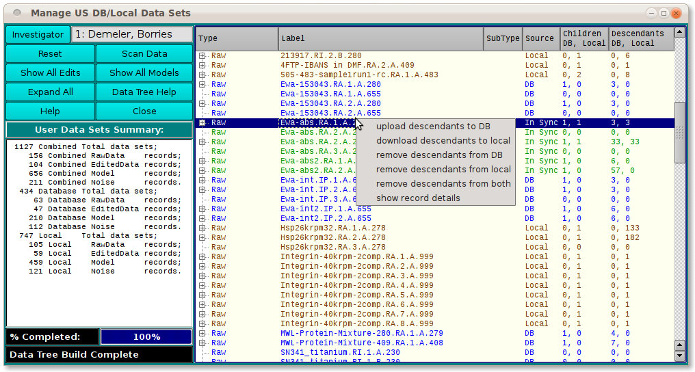
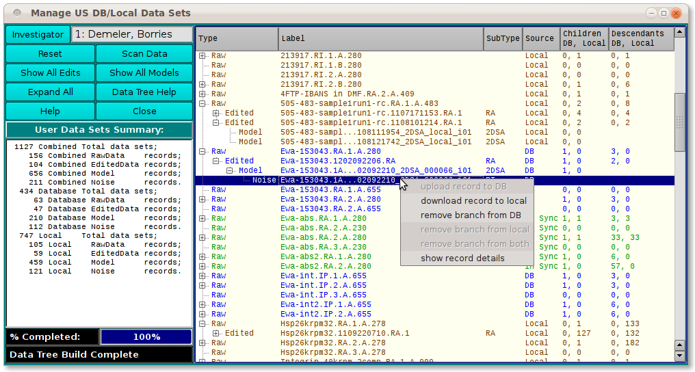
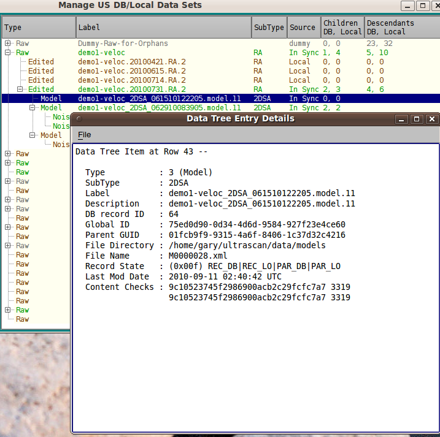
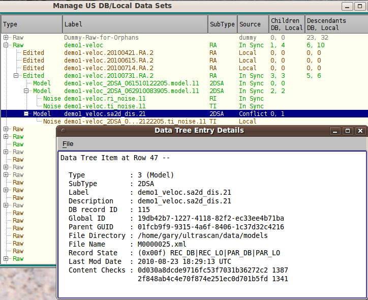

Manual
Manual
Manual
Manual
One of the main purposes of the Manage Data application is to bring each data set in the database and on local disk into synchronization. The processes to accomplish this are accessible through a context menu that pops up when you right-mouse-button click on a tree row. You can then move the cursor until a desired process is highlighted and release the mouse button to initiate that process.
There is no "Synchronize" option. The best method to accomplish identical records in the database and locally is something you must decide for each individual record. Sometimes the decision is easy: download when no local record exists; upload when no database one exists. Other times, a combination of upload, download, remove is called for in an order dictated by which version of a record is the latest or is regarded as the most reliable. A "details" display can help in making that determination.

Note that not all process options are available at every row. Some options are not possible for a particular data record. For example, in the context menu for a local-only record, only "upload to DB", "remove from local", and "show details" are enabled.

The details window for a data record that is already in sync will show that the DB and local copies have the same "Content Checks" (MD5 hash and record size values).

By contrast, the details window for a data record that exists on both media but is marked "Conflict" shows non-matching Content Checks.
